店小二案例解析店小二是成立于 2002 年的一家新加坡餐饮企业，创始人叶先生将药材烤鸭引入新加坡。从新加坡唐人街“牛车水”的一个小店铺起家，经过 20 多年的本土深耕，目前店小二在新加坡已有 17 家门店，遍及新加坡全岛。
2022 年 8 月店小二和华与华达成战略合作，实际上，店小二是我们服务的第二个新加坡客户，华与华第一个新加坡客户是莆田餐厅。我们跟莆田的合作是从服务莆田的中国市场开始的，核心服务中国市场，然后才到新加坡。
而华与华服务店小二的这两年时间里，全部服务新加坡本土市场，所以店小二可以说是华与华第一个海外市场本地客户。大家可能会问，一个 100 %市场都在新加坡的企业，他们为什么要跟华与华合作？华与华方法在中国市场很成功，面对新加坡市场也同样管用吗？我们合作第一年，店小二销售额就增长了 15 . 9 %，这个 15 . 9 %是非常难能可贵的。在过去的 2 年里，新加坡餐饮市场的竞争异常激烈，几乎所有中国餐饮企业一想要出海，就先来新加坡开几家店再说。尤其是头部企业他们在国内有几百家店，在新加坡开几家店就算赔本赚吆喝也无所谓。但无论是他们出海成功还是失败，他们都成功分走了新加坡本地餐饮的份额。据新加坡《商业时报》报道，截至今年 6 月底，有 32 个中国餐饮品牌已经进军新加坡，共开出184 家店；而在这 32 个中国餐饮品牌里，有 90 %是在近 2 年进入新加坡的。这也能说明了店小二为什么找我们，想在新加坡本地能有进一步发展并出海走向国际。那我们是如何帮助店小二在如此激烈的竞争中逆势增长了 15 . 9 %，并让品牌上一个台阶、适应全球的呢？我们接到一个项目，首先就是把握现状，店小二的问题是什么？找到问题，答案就在问题的背面。经过一番调研之后我们发现店小二有 3 大问题：第一，不知道。品牌，其实就是很多人知道的牌子，衡量一个品牌最直观的指标就是知名度。店小二的知名度和他现在的品牌规模是不匹配的，店小二当时在新加坡已有 16 家门店，在新加坡中餐连锁企业中规模已经很不错了。但他的知名度不够，我们在新加坡几乎每次打车都会问司机一个问题，你听说过店小二吗？通常 10 个中只会有 2 个人说听说过，而且是他在家附近吃过才知道。伟大的品牌一定是知道的人多，体验的人少，劳斯莱斯大家都知道，但不是谁都坐过。只有亲自体验过的才对他熟悉、没体验过的人就不知道，那一定是品牌知名度还不够。第二，不喜欢。店小二原先的形象来源于古代中国馆子、酒楼、客栈的服务员，在上世纪的武侠片中经常出现，这也是“店小二”这个名字的本意。但现在越来越少年轻人不知道这个知识背景，尤其是海外华人。这导致店小二不仅不容易被理解和传播，并且还有个问题——不好看！在项目刚启动的时候，上到老板、下到门店员工都对我们提了一件非常具体的要求，那就是服装设计，这是很少见的。后来我们才了解到，在新加坡招人工本来就因为竞争激烈越来越难，尤其是年轻人更是香饽饽。店小二 HR 说很多年轻服务员一到店小二面试，还没坐下来，看到店小二店员身
上穿的服装，掉头就走了。
▲店小二原来的服装
第三，不骄傲。一个伟大的品牌都是让人有骄傲感的，这个骄傲感怎么来呢？就是除了功能价值之外，还要有精神价值。据说，知道“ Coca - Cola ”这个词的人，仅比知道“ OK ”的少，提到它就想到美国精神和文化。但顾客提到店小二时，只知道店小二的产品好吃，并没有精神价值，也就没有骄傲感。所以，我们总结了店小二 3 大问题：不知道、不喜欢、不骄傲。华与华对店小二的战略营销品牌咨询服务，就从为这些问题制定 3 大解决方案开始：
1 、品牌战略：为品牌制定战略，用创意引爆战略；2 、元媒体战略：打造传播主阵地；3 、营销日历：超级道具营销与营销日历，形成品牌生物钟。
1为品牌制定战略用创意引爆战略首先，上面总结了店小二 3 大问题：不知道、不喜欢、不骄傲。这三者是有递进关系的，“知道”是最基础的层面；知道未必喜欢，“喜欢”这要靠手艺让人爱上；而“骄傲”，靠的是使命和文化。

一个伟大的品牌，一定是有使命感的品牌。什么叫使命？使命就是企业的目的和意义，回答了我和社会之间的关系。即我为社会创造了什么价值，如何创造价值，是不是只有我能创造？梳理店小二品牌价值，明确品牌战略店小二最迫切的问题就是缺乏这些价值梳理，要解决店小二的品牌战略，就是要找到店小二的品牌核心价值。首先就是要解决店小二是谁的问题，店小二是谁？通过调研我们发现，所有人都指向一个共同的答案，那就是店小二就是药材烤鸭。
店小二在新加坡开创了“药材烤鸭”这个品类，目前也是门店数最多的烤鸭品牌。他们的药材烤鸭，使用了秘方配制中草药，吃过的都赞不绝口，但只有吃过的才知道，没吃过的就不知道。
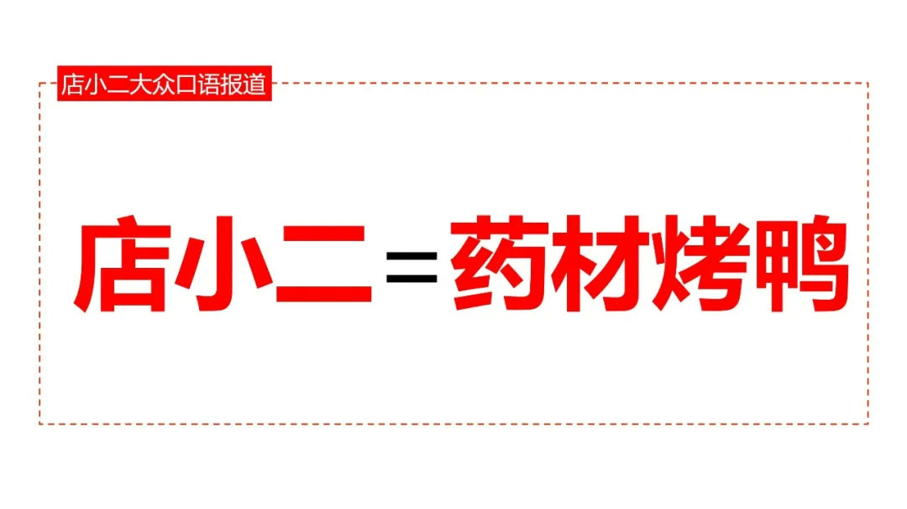
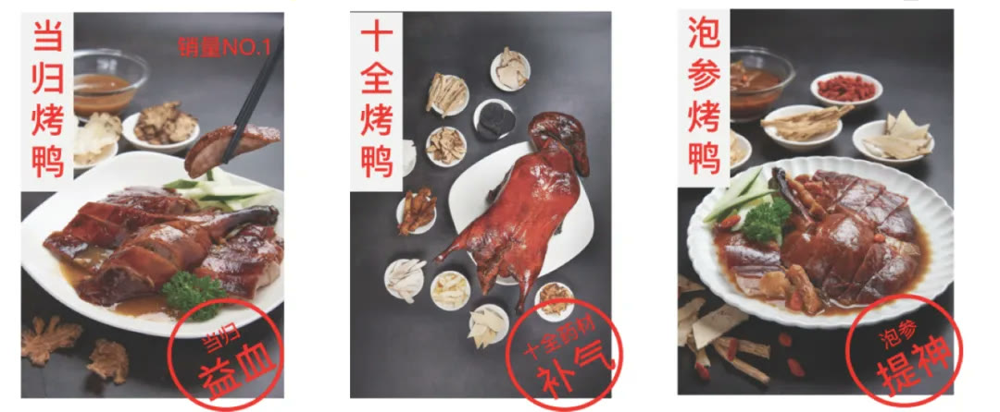
我们第一个关键动作是要把“药材烤鸭”，与店小二的品牌名紧紧的捆绑在一起，放到门头上，让顾客进店之前就知道，离店之后还能记住。世界有 3 大烤鸭：北京有北京烤鸭，香港有港式烧鸭，新加坡有药材烤鸭。你要想在北京吃北京烤鸭，有很多品牌可以选；想吃港式烧鸭，更是能在很多地方吃到；而想吃药材烤鸭，你只有在新加坡能吃到，并且是新加坡店小二你才能吃到，这是不是芝麻掉进了针眼里，巧了！不管是放眼全世界，还是新加坡，都是唯一的，这是店小二与生俱来的戏剧性，但是从来没有被提及过。所以，我们的价值首先是聚焦这个产品，占领药材烤鸭这个品类，然后思考如何放大价值，也就是这个品类将在社会中扮演什么角色，不仅是在新加坡，更是在全世界。那一个相对小众的品类，如何建立世界影响力，最有力的方式就是嫁接国家势能，这也正是店小二独一无二的优势——在新加坡的唯一性和权威性！法国社会学家和符号学家罗兰巴尔特说过，商业动机不是被掩饰，而是和人类的宏大叙事相结合，成为宏大叙事的一部分。
民族的就是世界的，新加坡的就是世界的。店小二立足于新加坡，放眼全世界，他的使命就是要做代表新加坡的国民餐厅，要将药材烤鸭打造成来新加坡必吃的美食名片，让药材烤鸭代表新加坡出征世界。具体怎么做？就是在“店小二药材烤鸭“前面加上“新加坡”，变成了“店小二新加坡药材烤鸭”。
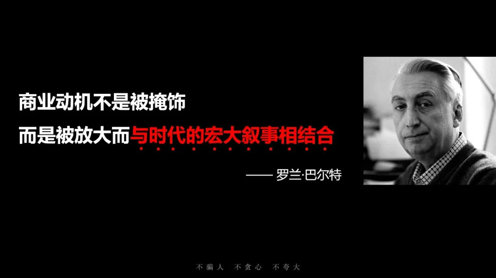
于是，店小二这个品牌就有了灵魂，这还不够，还要丰富血肉。也就是有了品牌战略之后，用创意引爆战略，那就是华与华的 2 个绝招——品牌谚语和超级符号，也是品牌三角形中最重要的两只翅膀。
创意店小二品牌谚语，放大品牌价值首先是创意一句品牌口号，不仅传播店小二新加坡药材烤鸭的品牌价值，还要发动消费者替我们传播。因为广告语的创作不是我说一句话给消费者听，而是设计一句话让消费者去传给他的亲朋好友听。来新加坡必吃的药材烤鸭！ The Must - Eat In Singapore , Dian Xiao Er Herbal Roast Duck . 这句口号一方面，既把药材烤鸭的价值最大化，又让店小二的身份价值
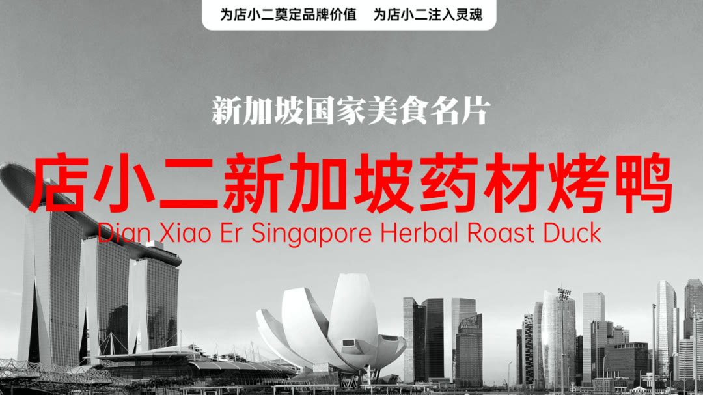

跟新加坡的国家宏大叙事相结合，把国家感情迁移到品牌上，不仅让本地人骄傲，也让外来者信服；另一方面，也通过郎朗上口的句式让消费者自发传播起来。
我们赋予了他使命，帮他找到了灵魂，建立了身份，这个品牌就一下子被点亮了。找到品牌与生俱来的戏剧性，创意店小二超级符号除了品牌谚语，另一个翅膀就是超级符号。什么是超级符号？超级符号就是天生大牌，超级符号就是超级熟悉，人们只认识他们本来就认识的东西，只熟悉他本来就熟悉的东西。原先的店小二 logo 是古代中国酒楼、客栈的服务员，在上世纪的武侠片中经常出现。但现在越来越少年轻人知道，尤其是海外华人，最大的问题是不熟悉，店小二需要一个全世界人人都熟悉的超级符号。
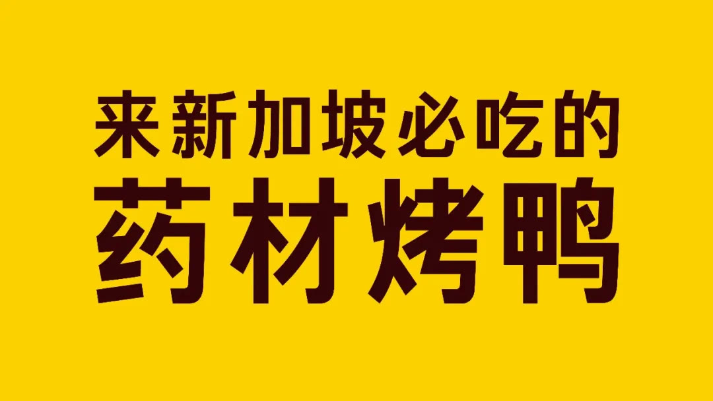
▲华与华前，店小二品牌符号
超级符号不是创造出来的，是找到的，找到品牌与生俱来的戏剧性。“店小二”三个字最大的戏剧性是什么？是“ 2 ”，阿拉伯数字是比英文字母应用更广的超级母体，占住一个数字比占住一个字母更厉害。有了“ 2 ”还不够，不够独特。我们还要发挥口号的戏剧性“来新加坡必吃的药材烤鸭”，于是“ 2 ”加上“鸭”，天生一对的完美结合，再加上一顶代表餐饮行业的厨师帽，就诞生了超级符号 2 鸭字标。
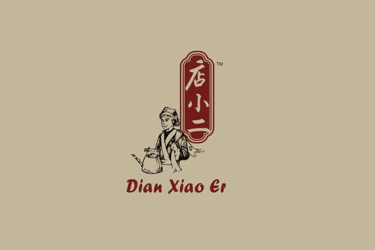
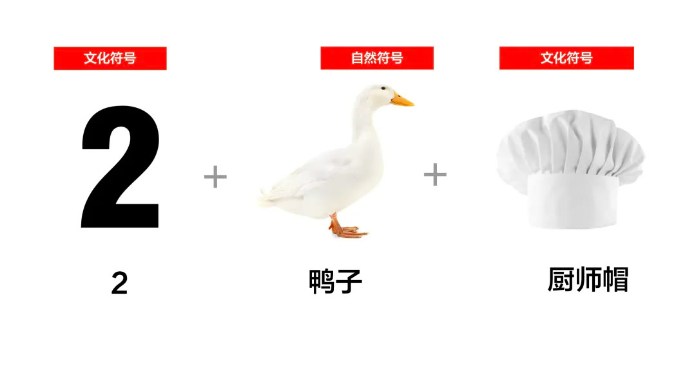
这三个全世界人人都认识的元素相加，把原来的复杂传统难懂的符号，变成时尚简洁的、世界性的符号。
▲华与华为店小二创意的超级符号
有了超级符号，还不够，我们还要让这只“ 2 鸭”活起来，创造了超级 IP —— DD . Duck ！华与华认为，超级符号不是无中生有，而是要寄生在文化母体中，让人产生天然的熟悉感，激发人们脑海中对于母体的集体潜意识。顺着发掘母体的思路，我们找到了一个具有全球文化原力的超级母体，就是“小黄鸭”！

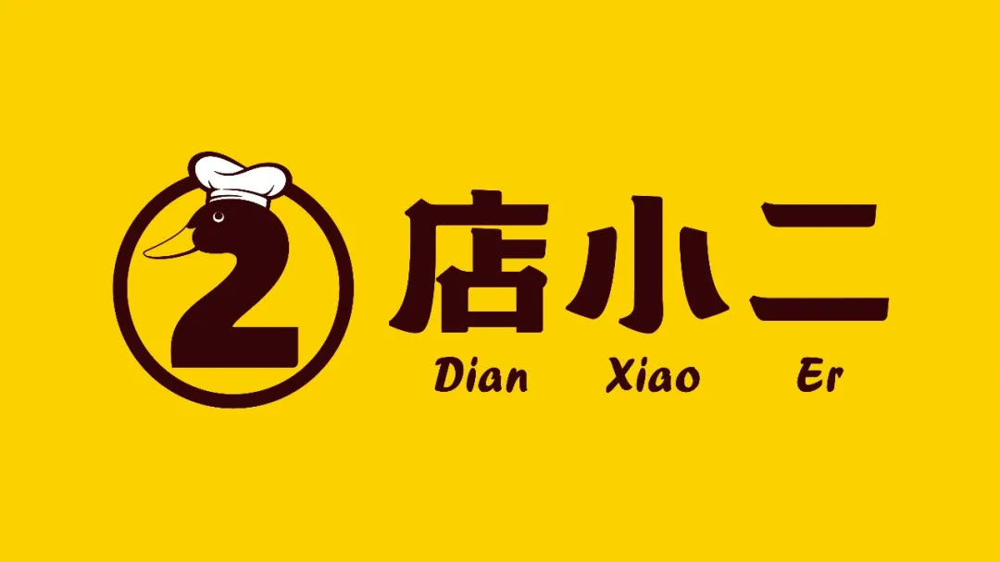
▲华与华为店小二创意的超级品牌角色 DD . Duck
大家是不是一看就超级熟悉，这样一只可以捏捏叫的黄色橡皮鸭，经常在浴室和泳池中出现，一定会勾起你的童年回忆，人们一看到它，一种与童年记忆相绑定的快乐感、幸福感、亲切感油然而生！
1992 年，一艘装载着近 3 万只橡皮小黄鸭的货轮从中国在开往华盛顿的途中遭遇了强风暴，这 3 万只原本该待在浴缸里的小黄鸭，组成了「鸭子舰队」漂过各大洋，在全世界
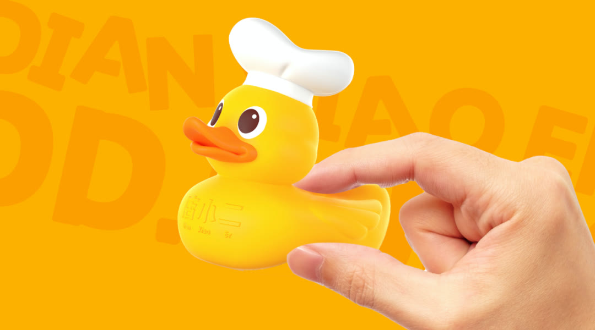
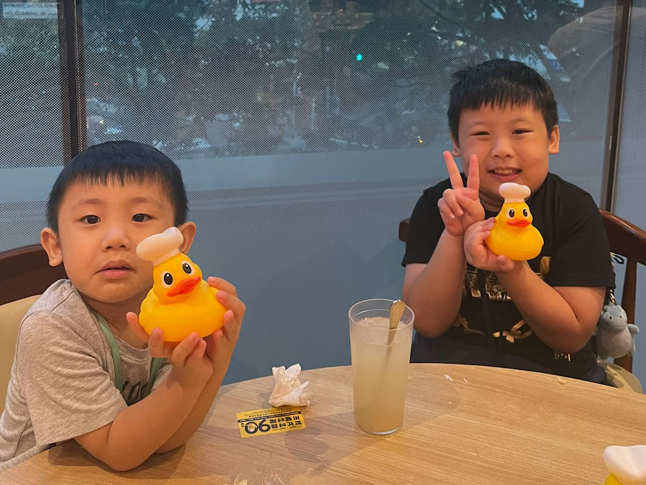
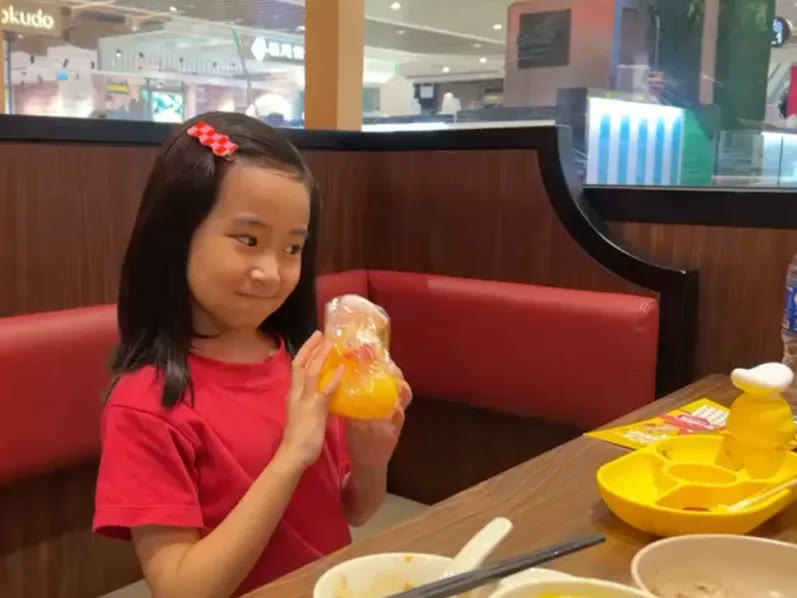
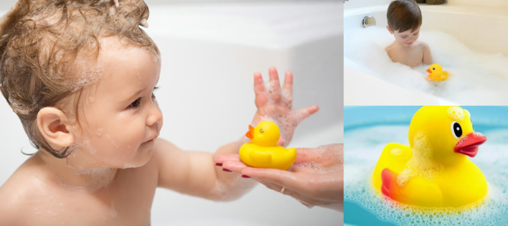
范围引发“追鸭热”。
我们提取了与餐饮行业关联度最大的符号之一——厨师帽与小黄鸭母体叠加，从而私有化，店小二的超级 IP ——小二鸭，英文名 DD . Duck 就这样诞生了！
不仅超级熟悉、超级喜欢，还超级好用，下面会为大家详细介绍我们是如何让 DD . Duck成为店小二的超级道具的。我们把合作的客户分为华与华前和华与华后，店小二等了 20 年，终于等来了华与华，一出手就为店小二打造了全球性品牌，我们称之为品牌定型。
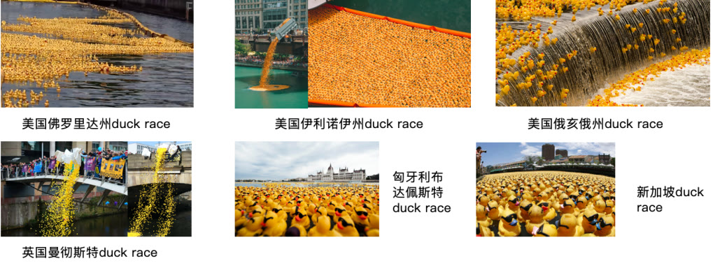
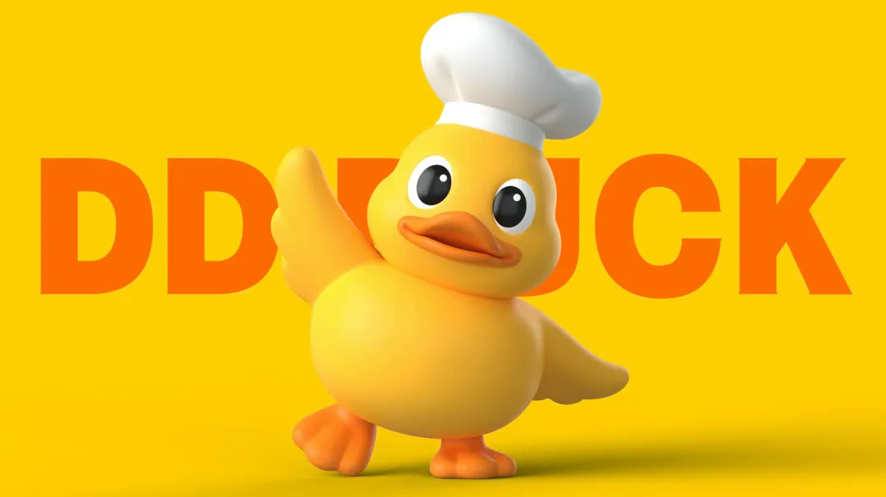
2元媒体战略打造传播主阵地品牌定型之后还不够，还要推广出去。华与华方法就是用超级符号来重新编码，然后全面媒体化，把顾客能看见的一切都视为媒体。这也就是我们要讲的第二点，元媒体战略。华与华把媒体分为两种：一种是元媒体，也就是自己身上的不花钱的媒体，比如包装；另一种是延伸媒体，是需要花钱购买的媒体，比如广告。我们首先要把自身的元媒体充分利用起来，那店小二的元媒体是什么呢，是整个门店。大家看这张门店照片，能一眼知道店小二是谁吗？在这都能吃到什么？为什么要来这吃？一没有品类定义，二没有品牌口号，这些关键决策信息都没有提供给顾客。

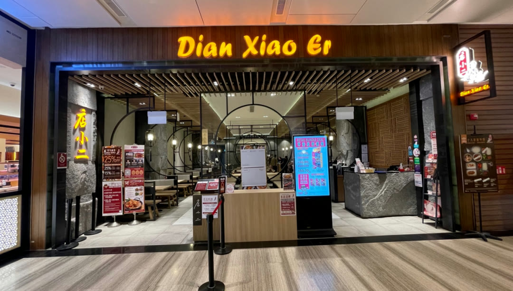
▲华与华前，店小二门店
华与华看门店不是品牌形象展示而已，是信号刺激系统。那我们是怎么样通过改变门店的信号系统，实现更高的转化率？门店信号刺激系统的六个基本原则：首先，把店小二的中英文和品类都上招牌，一看知道我是谁；第二，口号摆明进店理由；第三，符号放大用，信号强 3 倍；第四：海报要显眼、擦亮招牌菜；第五：荣誉亮出来，实力来说话；第六，也是最重要的，我们开发了一个新广告位——超级销售台。把店小二卖得最好、最经典的 12 道菜上到发光灯箱上，并标上价格和阐明顾客经常问的问题，不用问店员，顾客自己在门口就点好菜！这不仅吸引顾客注意，还设计顾客的选择逻辑，并且节省了点菜时间，一箭三雕。它的威力太强了，连竞争对手都在模仿！
门店是品牌最好的道场，得不停地下钩子，不浪费每一寸空间。
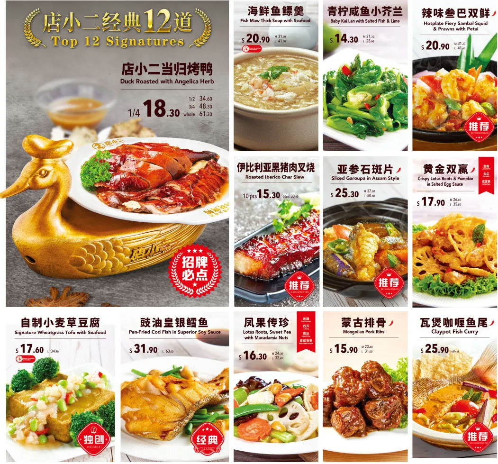
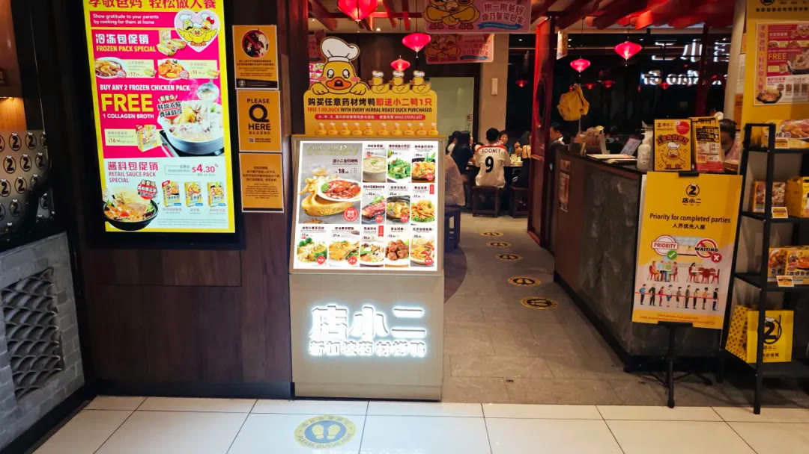
▲华与华后，店小二门店
店小二另一个重要的元媒体，就是我们的鸭盘餐具。不知道大家去餐厅吃饭会不会做一个动作，吃饭前先拍照！不仅拍食物，餐具好看的话也会加分不少，并且餐具是顾客接触时间最长的媒体，之前的餐具没有烘托药材烤鸭的地位，所以我们要让产品成为英雄，如何做？华与华设计招牌产品餐盘的逻辑，让产品本身成为符号：1 ）符号性要强，和超级符号力出一孔；2 ）产品是媒体，要有独特性、识别度；3 ）操作便利性，兼具功能价值和广告价值。放大戏剧性，放大信号能量，让产品本身成为符号！大家看同一盘鸭放在这个鸭盘中是不是能多卖 5 新币！
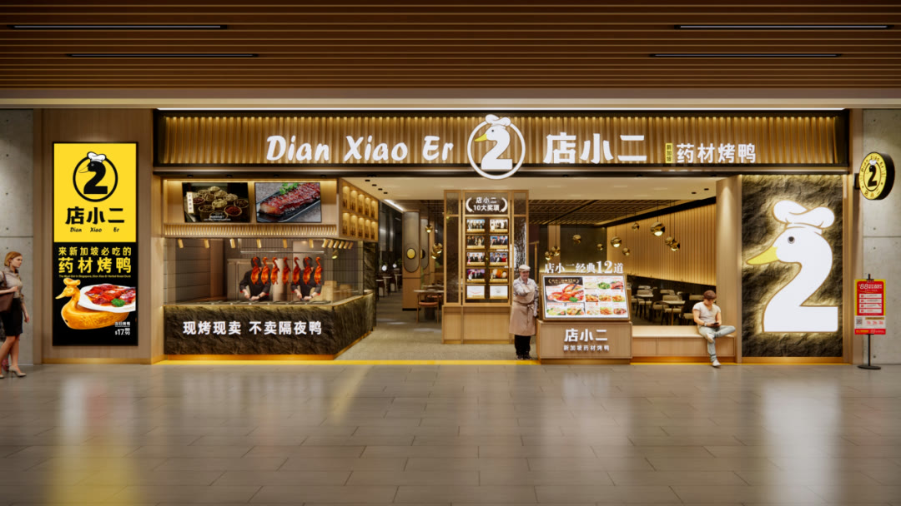
同样，开头提到的服装也是我们非常重要的元媒体，很多人不知道华与华还能做服装设计！华板当时对我们提了一个要求，要以空姐服装的标准来重新设计，于是它们现在长这样，你还能相信是同一个品牌吗？
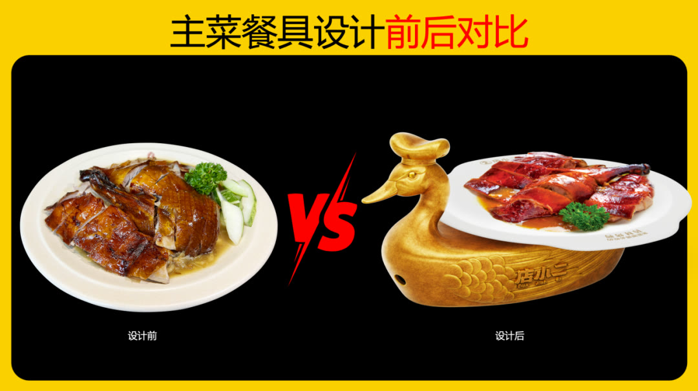
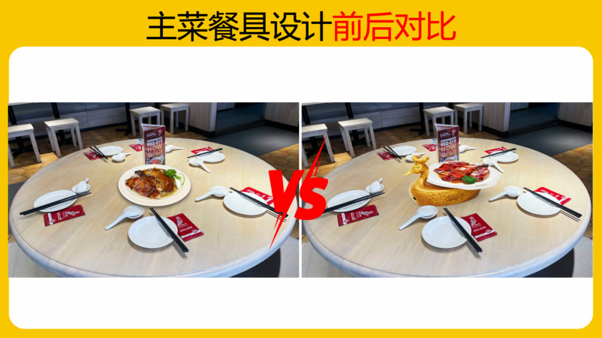
▲店小二服装对比，上为华与华前店小二服装
3超级道具助力营销日历形成品牌生物钟品牌的最高境界就是成为人们日常生活的一部分，我们要把店小二最重要的元媒体 DD .Duck ，做成一个超级道具、超级媒体活进了新加坡人们的日常生活中，这就要靠第三个华与华的拿手绝活——营销日历。营销日历为什么叫营销日历？首先，我们把一年的推广主题和节奏固化下来，每年不断重复，实现少干活，多挣钱；第二，它是为品牌造节，是为了与顾客持续互动、保持品牌的活跃度，那就要让顾客乐于参与。如何让顾客在固定时间来并乐于参与呢？秘诀就是——节日寄生，找到消费者本来就要参与的活动，然后牢牢寄生在上面，把公共节日变成独家节日。如何借势公共节日？关键是要把品牌和公共节日非常巧妙紧密的结合在一起，我们有绝招！—— DD . Duck ！首先我们来看看给店小二做的第一个营销活动——春节。新加坡华人最看重、假期最长的节日是春节，很多传统习俗甚至比中国保留得更好。一到春节，上香供佛迎财神，拎着吉袋拜大年，人人相互祝发财。我们创意了一句吉利话，“新年吃烤鸭，今年一定发！”吃了大烤鸭，就送发财鸭，不仅有恭喜发财鸭 Huat ah ! DD . Duck 、还有福星高照鸭 Blessing DD . Duck 、增财添禄鸭Lucky DD . Duck 、寿比南山鸭 Longevity DD . Duck 、喜事临门鸭 Auspicious DD . Du ck 。

所以春节你会看到大家拎着店小二的大吉大利袋走街串巷，到亲戚家一看，家里供着店小二的发财鸭！
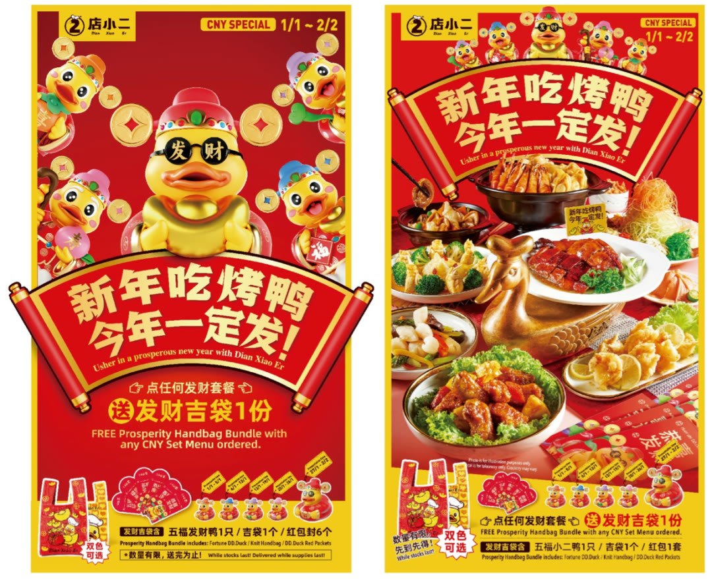
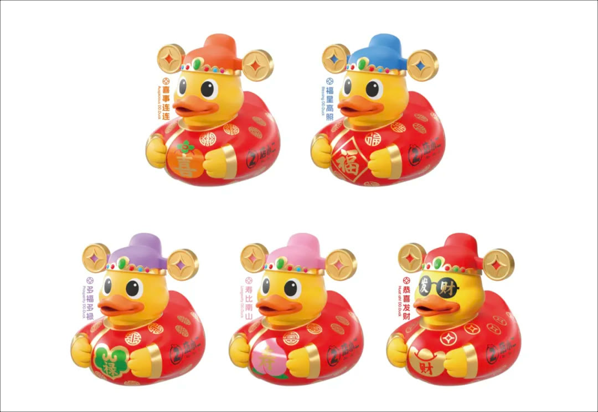
发财鸭到底有多受欢迎呢？给大家举个例子，去年春节送出 10 万只发财鸭，今年 5 月有一天我们去食阁吃饭，看到档口上都放着一只店小二的发财鸭！这样下去，发财鸭很可能取代招财猫，以后新加坡的每家门店都要有一只，有了发财鸭，就能发财鸭！ DD . Duck 不仅在新加坡春节，在日常生活中也扮演一个招财的角色。
除了春节，新加坡人第二重视的就是国庆节，作为“来新加坡必吃的药材烤鸭”，新加坡国庆肯定少不了 DD . Duck ，“国庆吃烤鸭，就送国庆鸭！”今年 6 . 9 万只国庆盲盒鸭供不应求，有 Majulah DD . Duck / 前进鸭、 Police DD . Duck/ 警察鸭、 I ❤ SG DD . Duck / I ❤ SG 鸭、 Orchid DD . Duck / 胡姬花鸭、 Little Re d DD . Duck / 小红鸭，还有勾起不少新加坡男儿热血回忆的 Army DD . Duck / 阿兵鸭。把对新加坡的骄傲感嫁接到 DD . Duck ，跟国家的宏大叙事相结合，于是， DD . Duck 就成为新加坡人们庆祝国庆的超级载体。每到国庆，大家都会来店小二收集不一样的国庆鸭，把品牌寄生到消费者的生活中，充当一个超级道具、超级媒体！
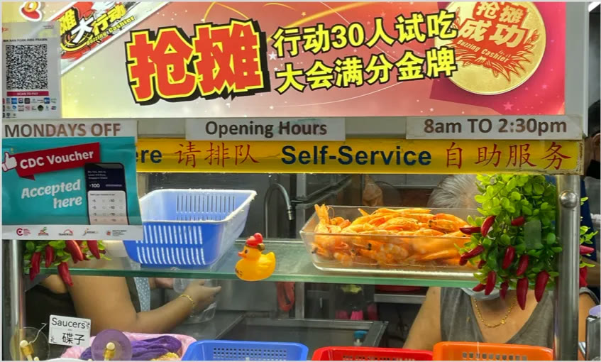
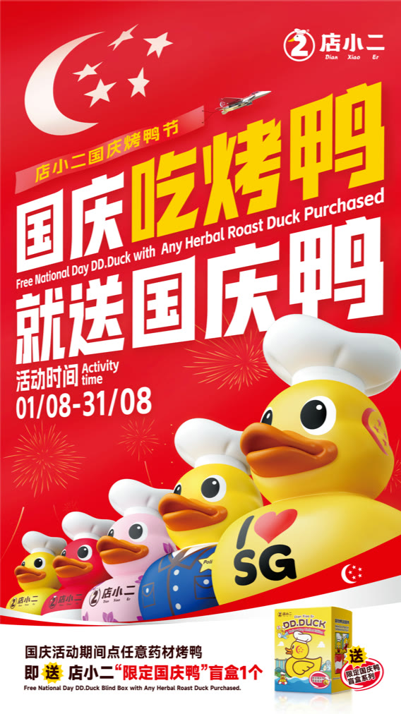
这 6 . 9 万只国庆鸭活动还没结束就被一抢而空，有很多人收集了非常多只国庆鸭，甚至有位爸爸想花 50 新币为小孩买一个，把服务员都吓坏了。不仅如此，我们创意了儿童节“宝贝吃光光 就送小 2 鸭！”活动，送大号小二鸭和彩虹鸭，彩虹鸭在新加坡小红书上甚至标价到 38 新币一只！
蜜雪冰城曾有一个不倒翁周边，原售价 1 块，在网上炒到了几百块，这个事情让我们意识到雪王周边这门生意可让蜜雪成为饮品界的迪士尼，可以成为一个独立的大生意。看来大家得多收集小二鸭，说不定以后还会升值！
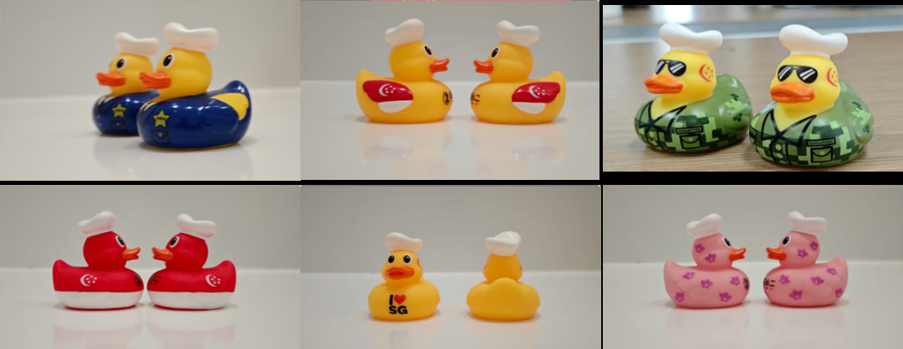
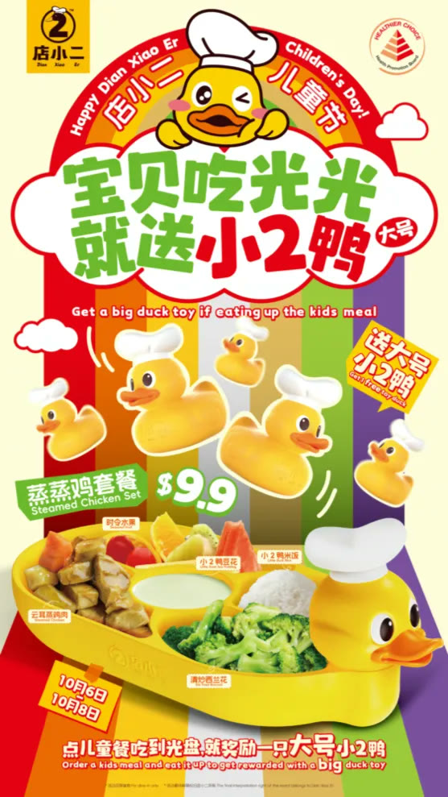
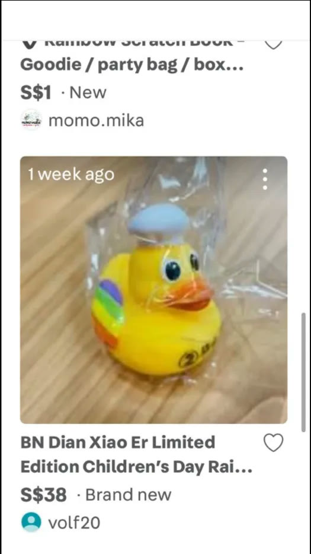
我们还在圣诞送圣诞快乐鸭，儿童生日派送有生日快乐鸭，还有平时来店小二吃药材烤鸭就送经典版小二鸭。所有营销活动都持续围绕小二鸭积累品牌资产，店小二 2023 年一年送出了 50 万只小二鸭。这是什么概念，新加坡 2023 年人口数有 563 . 7 万， 150 万户家庭，相当于 3 分之一的家庭里都有小二鸭！已经形成了消费者口语报道——“买鸭送鸭！”和“去店小二拿鸭子！”
这也是可口可乐用过的一个成功策略，大量发放各种小营销道具，将品牌植入到家庭日常生活中。仅 1913 年一年期间，可口可乐就分发了 1 亿多件广告宣传品，包括体温计、火柴盒、棒球卡等，这一年发的广告品足以满足从 1650 年以来生活在美国大陆的所有男女老少的需要。所以这样看来，一年 50 万只还远远不够，我们希望未来每个新加坡家庭里面，至少有 5只以上小二鸭，让店小二活进新加坡千家万户，以后新加坡就有 2 个标志，鱼尾狮和小二鸭!
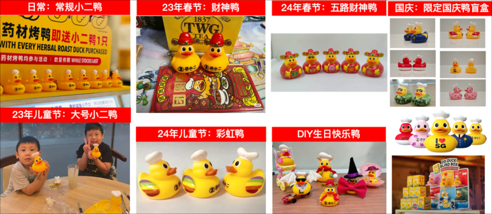
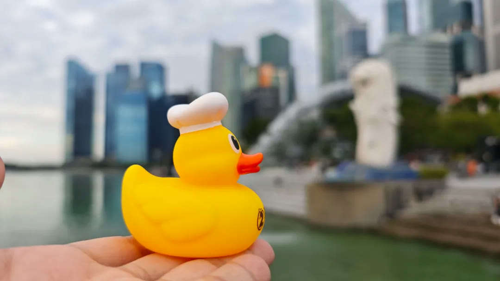
除了春节、国庆、儿童节，我们还创意了双亲节活动，“抱一抱爸妈 康乃馨带回家！”创造机会让子女用拥抱来表达对父母的爱和感激，以及“厨王争霸赛”， 17 家门店大厨上新菜！
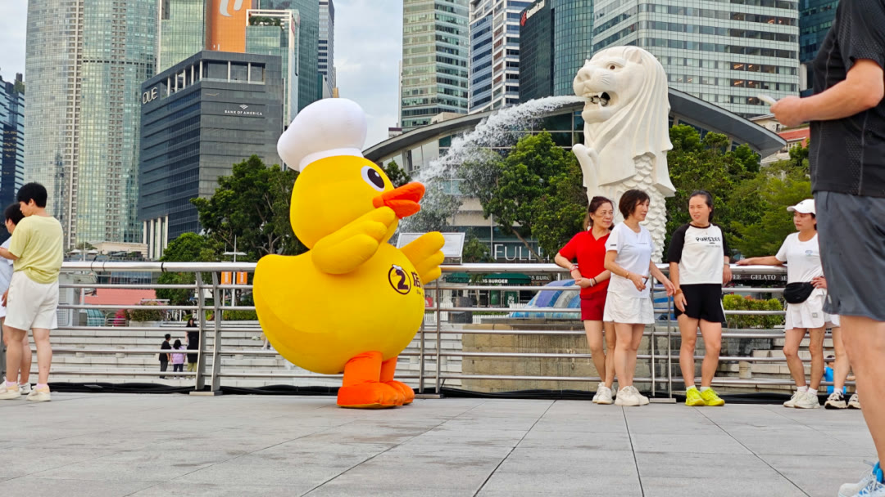
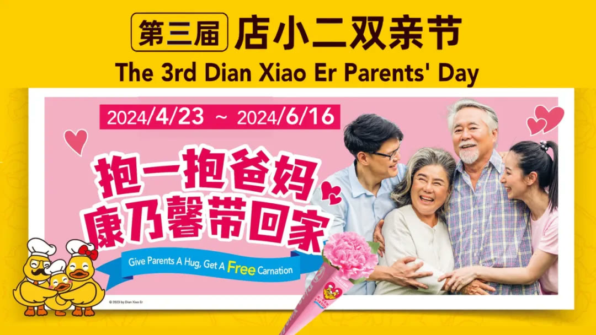
把这 5 个活动固定在日历上，每年就按固定的时间干固定的事儿，牢牢地把店小二餐厅和新加坡人民的生活捆绑在了一起，成为新加坡人民生活的一部分，年复一年持续积累将成为全新加坡人共同的节日。
我们一出手就是做了 5 个活动，基本每隔 2 个月就有一次活动，鼓点不停，因为品牌就是声量，就是气势，活动越多、声量越大、气势越足。尤其是在竞争激烈的环境中，一定要有动作，对内提士气、对外提声量！本文总结品牌治气不仅是对外的，更是对内的，华与华为店小二带来的新的战略、新的形象、新的活动，让老板和员工看到了新的希望，激发了老板扩展全世界的梦想，激活了组织的生命力。虽然店小二还没有走出新加坡，但我们已经储备了一个全球品牌，这是一个新的开始，让我们敬请关注店小二的下一个五年！
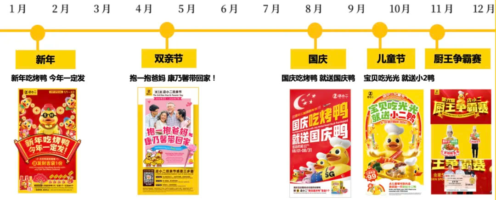